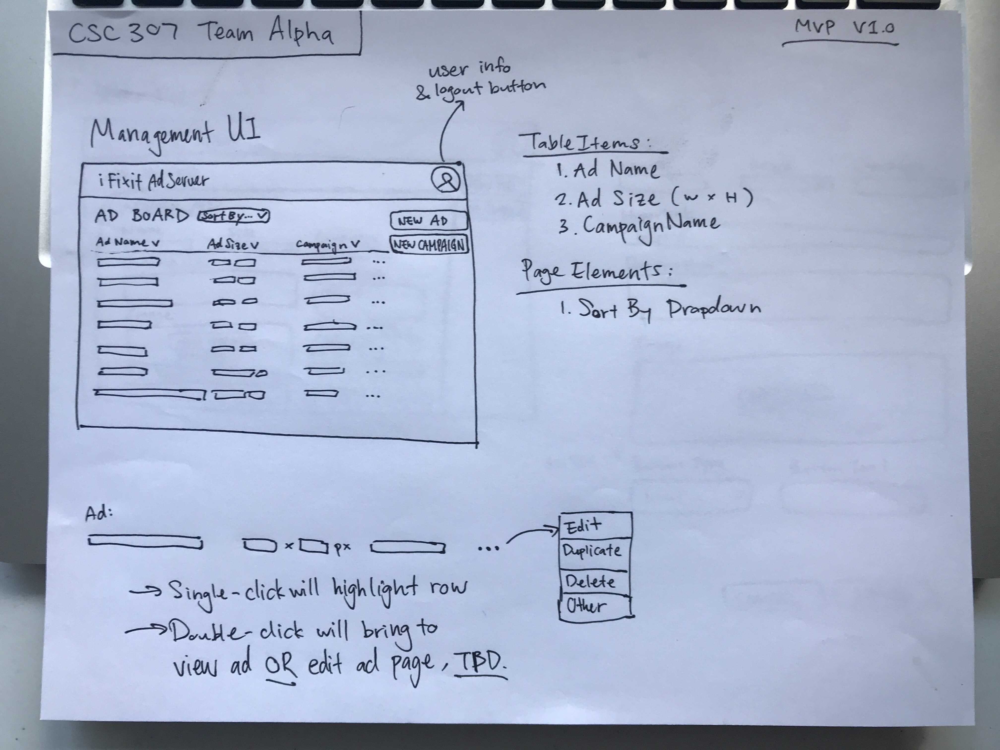
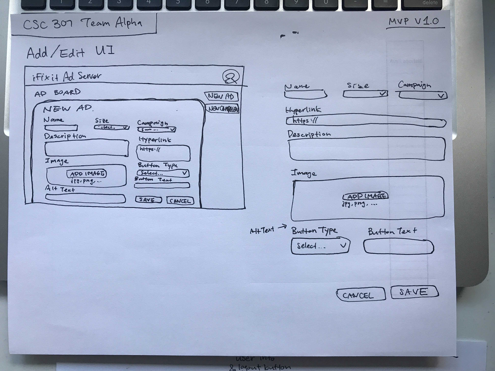
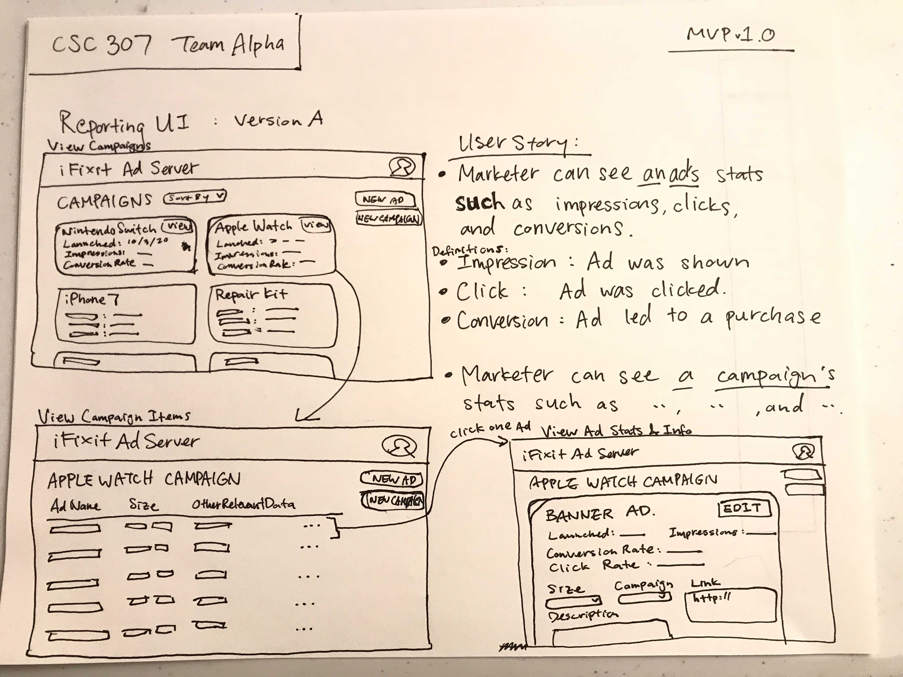
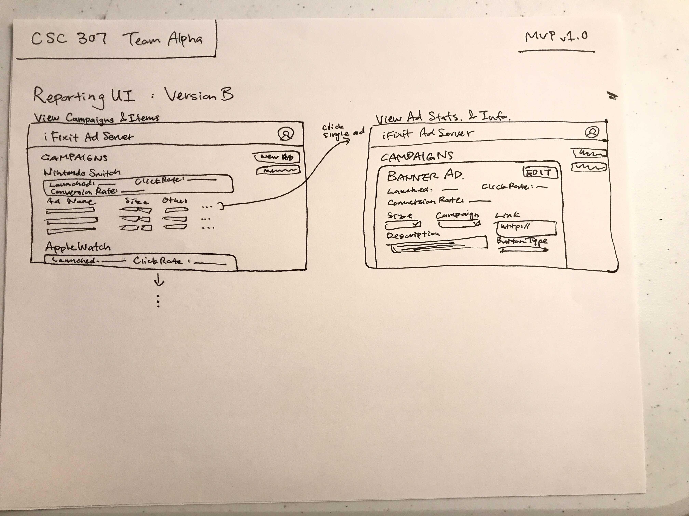
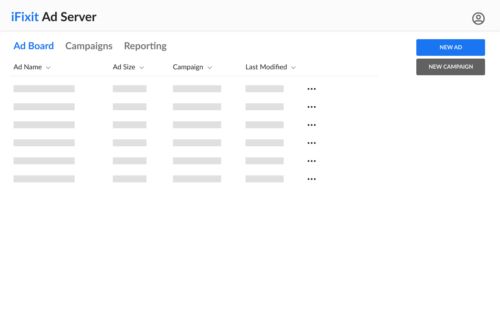
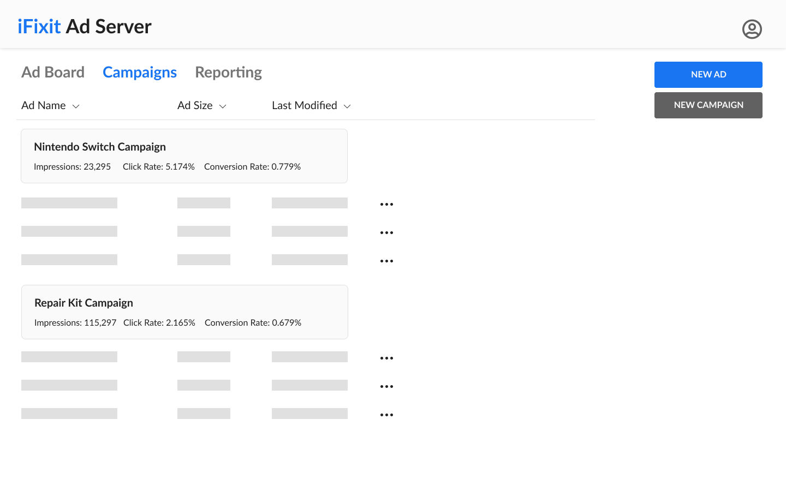
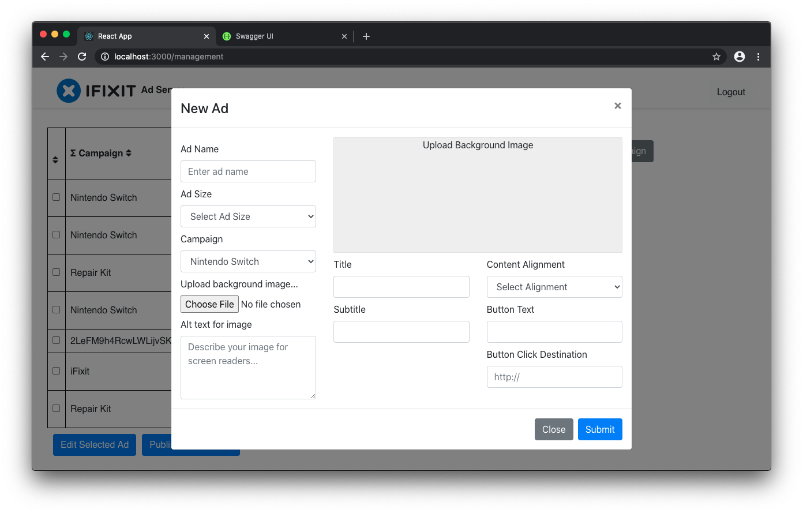
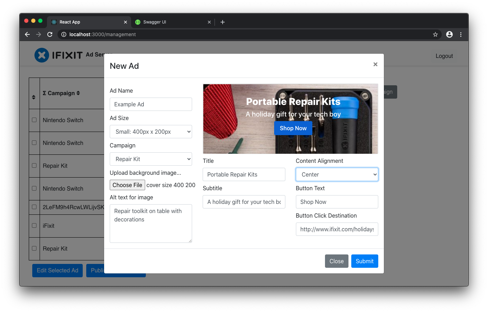
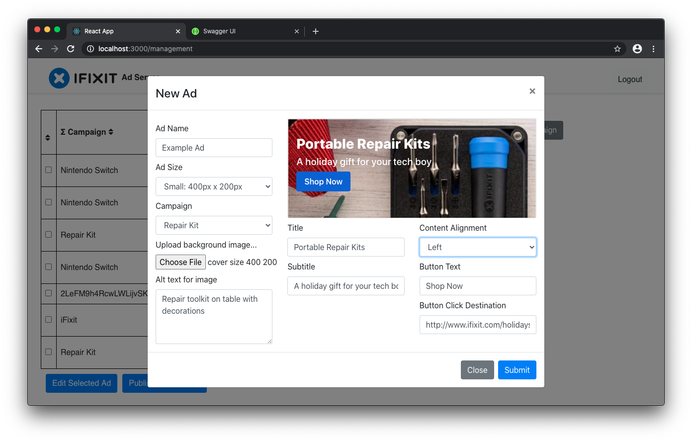

iFixit Ad Server
Fall 2020 // CSC 307: Intro to Software Engineering

iFixit Ad Server React app prototype and implementation.
Skills: Color, Typography, Wireframing, Figma, GitHub, HTML, CSS, React.
Team: Myself + 5 Computer Science Students
Overview
We designed and developed an app MVP for the iFixit marketing team to easily manage ad campaigns for their website. I was responsible for the wireframing, Figma prototyping, and implementing the "New Ad" modal component in React.
The project roadmap:
- Learn about how ad campaigns work.
- Interview the iFixit tech manager as our mock client to generate app requirements.
- Design app prototypes.
- Implement an MVP of the app.
For the web app we decided to use ReactJS for the frontend, NodeJS for the backend, and Firebase for the database. As a part of the front-end team, I was responsible for implementing components and connecting them to the backend.
Design
Ad Table and New Ad Modal
First, I wireframed the two core features of the app: creating an ad and viewing a list of existing ads.
Wireframe of the Ad Table and line item.
Wireframe of the New Ad Modal.
Campaigns Version A and B
Then, I wireframed two versions of user flows for accessing ads under a campaign.
Campaign Version A
Campaign Version B
I designed version A so that users can get a better top-down view to compare the success rates of campaigns. Although it requires more clicks, each step has a lesser congitive load. Version B might be more convenient how it displays everything in one page, making it easier to access Ads across different campaigns.
Our team agreed on Version B since the implementation was simpler to work out.
Prototype
I created higher fidelity prototypes for the Ad Table and Campaign Table.
Hi-fi Figma prototype of the Ad Table.
Hi-fi Figma prototype of the Campaign Table.
Implementation
I was responsible for building the "New Ad" modal with a preview of the Ad using front-end data. I created this component using React Grids and the Modal component.
The New Ad Modal I implemented.
With preview content aligned center.
With preview content aligned left.
The Ad preview turned out well, with options to align the contents left or centered. The preview looks quite accurate to the actual ads on the iFixit website.
Challenges
Frontend Tools
I initialy used CSS grids to layout the New Ad Modal. I ended up rebuilding this component using the React Grid and Modal library, which produced simpler code and a cleaner interface. I would have saved time if I made sure to utilize the best technologies.
Naming Patterns
We were often confused in discussing the frontend because we never agreed on a naming pattern for our app elements. If we had agreed in the beginning on an intuitive naming pattern, we would have avoided confusion and saved more time.
API and Information Architecture
We did not define our REST API functions and JSON props until a few weeks into development. The frontend team was only able to work on cosmetic things until after we ran a meeting to define the API. As for the props, I discussed with one other team member to define the JSON object for Ads since we were the ones working on the UI involving the Ads itself. This worked out for our small project, but for future projects I would make sure to define the information architecture and API before development.
Results
This was my first time building a functional app, so it was exciting to see my implementations working on a real app. Although the skillsets of our team members varied, everyone was honest with their communication, so I had a smooth experience working with this team. I was also able to apply my prototyping skills to this team of Computer Science students, and I think that saved us a lot of time by solidifying a unified vision before implementing the app.